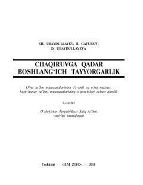

CQ11-sinf o'quvchilari uchun chaqiruvga qadar boshlang'ich tayyorgarlik fani darsligi.
Ushbu darslik o'rta ta'lim muassasalarining 11-sinf o'quvchilari uchun mo'ljallangan bo'lib, fuqaro muhofazasi, hayot xavfsizligi asoslari, harbiy ish asoslari, otish va saf tayyorgarligi hamda tibbiy bilimlar haqida ma'lumot beradi. Kitob yoshlarda vatanparvarlik tuyg'usini shakllantirish va favqulodda vaziyatlarda to'g'ri harakat qilish ko'nikmalarini rivojlantirishga xizmat qiladi.